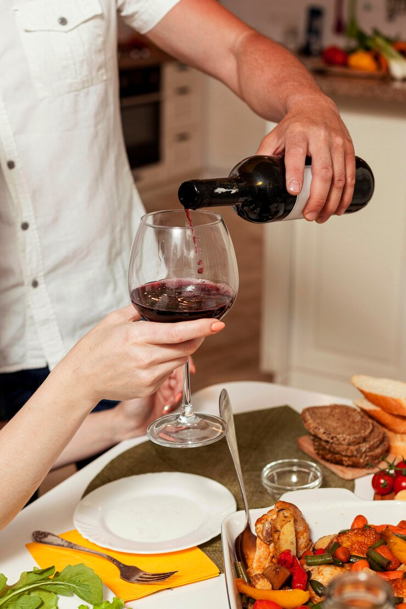
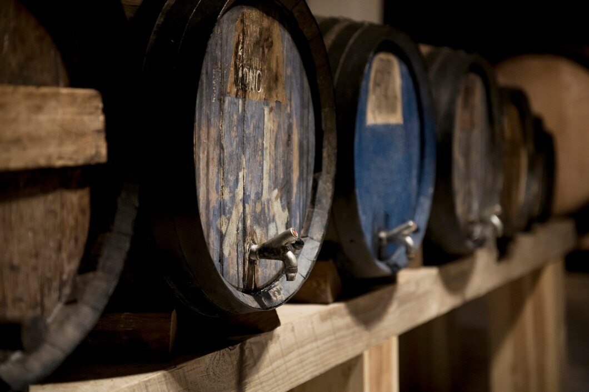
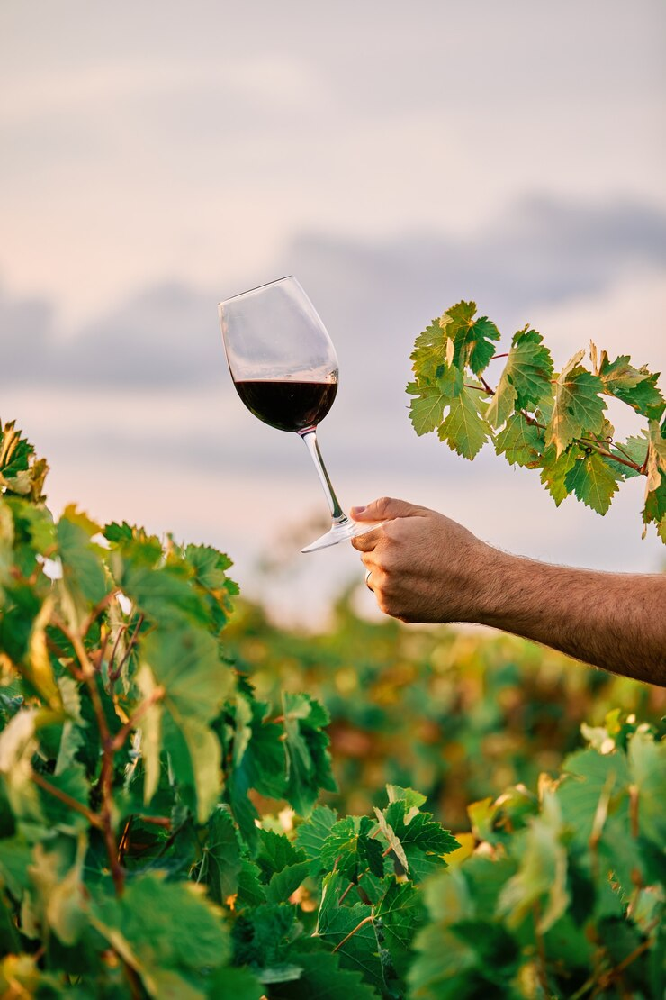
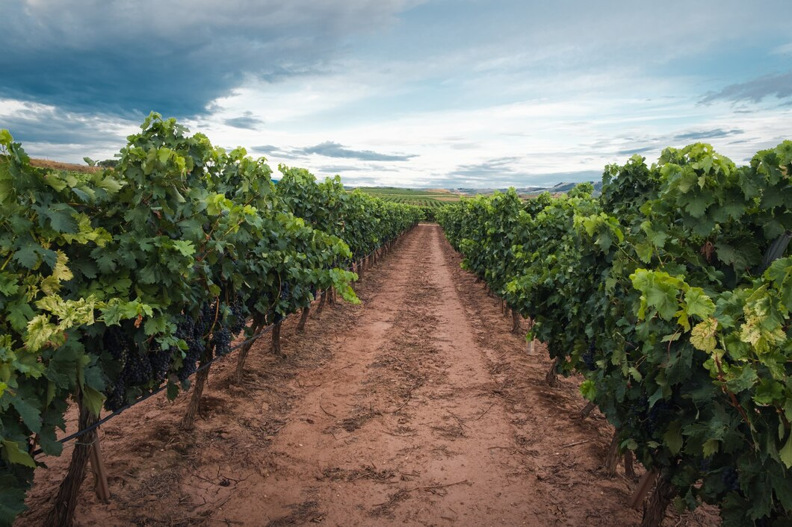

HISTORIA TIERRA DE VINOS
La Bodega Tierra de Vinos lleva mas de 10 años a tu servicio
La Bodega Tierra de Vinos abre sus puertas en pleno corazón de Madrid, a finales del año 2009 , como tienda especializada en vinos.
La plaza Mayor se convierte desde entonces en punto de encuentro para los amantes del maravilloso mundo del vino, con más de 100 metros cuadrados de exposición.
La ubicación de la Bodega coincide con uno de los puntos turísticos más importantes de la ciudad , atrayendo así, un gran número de clientes , tanto madrileños, como de provincias vecinas e incluso un alto porcentaje de consumidores extranjeros.
NUESTRA BODEGA
Con más de 150 años de estructura arquitectónica, se combina el ladrillo visto con la nobleza de la madera en dos plantas con una superficie total de 100 metros cuadrados,
en espacios divididos con diferentes ambientes.
En una planta superior , encontraremos la exposición de venta , cientos de botellas agrupadas por zonas geográficas que confeccionan todo un mapa español.
En la planta baja, nos aguarda la sala de catas, una estancia climatizada, donde los mejores vinos , hacen su guarda en botelleros, celdas y nichos, que a su vez , sirven de decoración de nuestras experiencias enológicas.
Los clientes pueden disfrutar de su compra y pueden también, catar y degustar los mágicos productos que la Bodega de los Reyes, semanalmente, ofrece a través de las diferentes actividades que lleva a cabo durante el año, catas comentadas, cursos de iniciación, monográficos, presentaciones de Bodegas, catas lineales…



